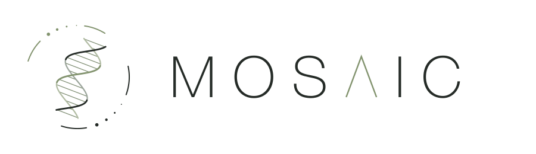

MOSAIC Lab


BiRC · Department of Molecular Biology and Genetics · Aarhus University
MOSAIC Lab studies the origins of structural variation in humans and primates. We investigate how duplications, deletions, inversions and other genomic rearrangements arise, why they recur at particular loci and how they contribute to genomic diversity.
Our research brings together long-read sequencing, comparative genomics, and population genetics to study genomic rearrangements and their evolutionary consequences. The group opens at Aarhus University on December 1, 2026, led by Clio.
news
| Clio will join Aarhus University as a tenure-track Assistant Professor and establish MOSAIC Lab. | |
| Clio discusses the Early Career Editor initiative on the Heredity podcast. |
selected publications
Work by Clio and collaborators before the group’s launch.